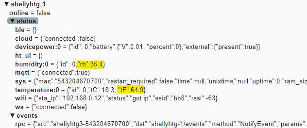
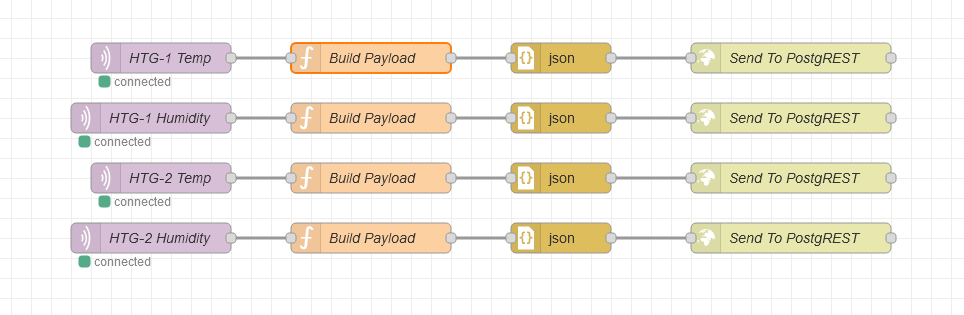
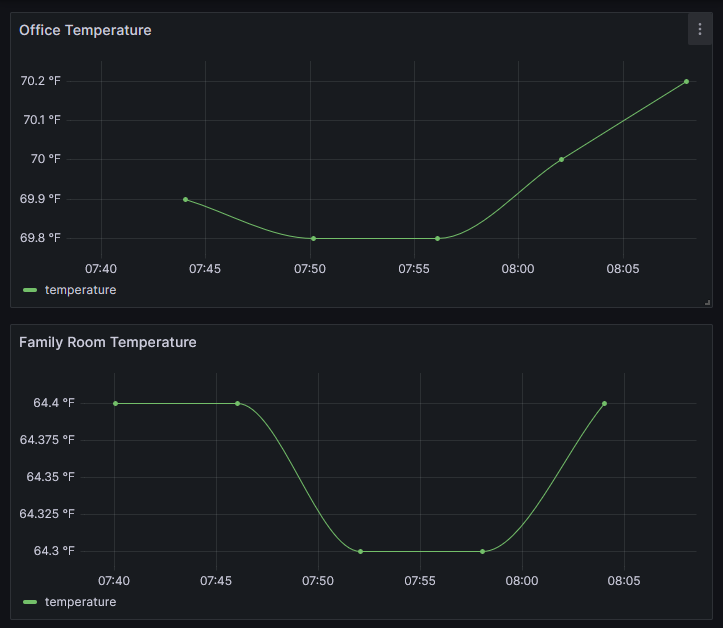
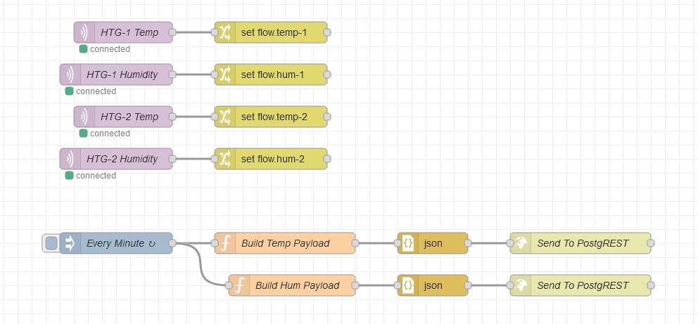
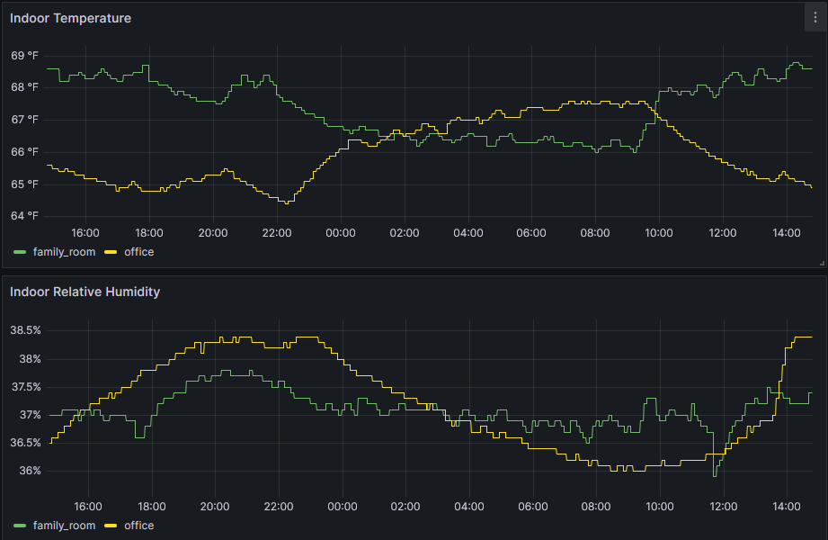

Shelly H&T Gen3 Integration

I recently picked up two Shelly H&T Gen3 temperature and humidity sensors to help evaluate temperature differences between a few rooms in the house. I really like products that put me in control - the Shelly sensor is easily configured over wifi without creating an account, and it supports self-hosted MQTT brokers. 10/10, would buy again.
That said, there are some wrinkles. I want to walk through my initial integration and explain the drawbacks. Then we’ll look at where I ultimately ended up.
Initial Attempt⌗
My standard pipeline for ingesting metrics via MQTT is:
MQTT -> Node-RED -> PostgREST -> Postgres -> Grafana
This works really well for my Emporia Vue 2 energy monitor as detailed here. In that case, the Vue sends a single message containing all metrics. The Shelly H&T, however, sends distinct messages for temperature and humidity readings (among other things):

Having two sensor units also means that there are a total of four MQTT topics that I actually need to listen to, so my Node-RED flow looks like this:

As a consequence, I can’t reliably store a given reading for both rooms at the same time. Where my energy metrics table looks like this…
| Timestamp | Family Room | Office |
|---|---|---|
| 2024-12-24T00:00 | 240 | 110 |
| 2024-12-24T00:01 | 200 | 105 |
| 2024-12-24T00:02 | 210 | 107 |
…I’m forced to store my temperature metrics like this:
| Timestamp | Temperature | Room |
|---|---|---|
| 2024-12-24T00:01 | 65 | Family Room |
| 2024-12-24T00:01 | 77 | Office |
| 2024-12-24T00:02 | 66 | Family Room |
| 2024-12-24T00:02 | 76 | Office |
Now you might be thinking, “wait, the second option is definitely better!”, and in a “normal” (pun intended) database, you’d be right. But that makes building the Grafana dashboards more difficult and also means I need to include two columns in the index (timestamp and room) instead of just one (timestamp).
And one final gripe - the Shelly H&T only sends out MQTT messages when the temperature or humidity changes by at least 0.5 units (either degrees C or percent, depending on the metric). That’s great for saving power, but makes the rate of updates inconsistent between rooms.

Second Attempt⌗
Instead of pushing metrics to PostgREST/Postgres each time a message is received, I decided to store the value in a flow-scoped variable. When a new message is received, it updates the value held in one of the four variables - temp1, humidity1, temp2, humidity2.
Then, once a minute, a separate pipeline reads the values of those variables and sends the data to PostgREST. This has the potential to introduce a tiny amount of delay between when a value changes and when the change is actually recorded, but in my testing so far, the values don’t change very frequently at all.
Here’s the new flow:

With this flow in place, I can now use the same timeseries database structure that I use for energy readings which makes the Grafana dashboard a piece of cake!

Overall I’m happy with my purchase of the Shelly H&T Gen3. It was relatively cheap and fits into my existing infrastructure easily.